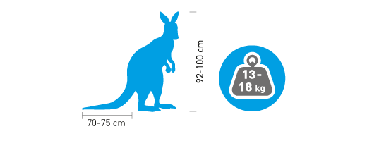
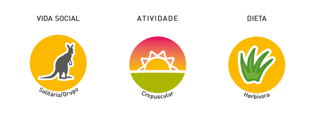

Kangur Rudy
Macropus rufus
Rząd:dwuprzodozębowce
Rodzina:kangurowate
Charakterystyka

Samce znacznie większe i cięższe od samic, osiągają ciężar ciała 90–100 kg i ponad 180 cm wzrostu w postawie stojącej. Sierść ma ubarwienie czerwonorude dzięki wydzielinie tzw. gruczołów pudrowych umieszczonych na szyi i piersiach. Kończyny przednie krótkie, tylne potężne, długie, umożliwiające zwierzęciu skoki ponad 3 m wzwyż, na odległość ponad 13 m.
Tryb życia

Występuje w ogromnych stadach na terenach otwartych. Samce toczą zacięte walki o pierwszeństwo w stadzie. Kangury są roślinożerne.
Rozmnażanie

Ciąża trwa 33 dni, samica rodzi 1–2 młode o wadze 0,75–1 g, nagie i ślepe, które przedostaje się do torby skórnej na brzuchu samicy, gdzie przebywa przez ponad 200 dni do czasu uzyskania samodzielności.
Zasięg i siedlisko

Południowo-wschodnia Australia.
Ochrona

Zagrożenia: Kangur rudy był niegdyś przedmiotem masowych polowań dla mięsa i skór, a także ze względu na konkurencję pokarmową, jaką stanowił dla stad owiec hodowanych licznie w Australii.
Ciekawostki
- W biegu kangur rudy osiąga prędkość dochodzącą do 90 km/godz. Silnie zbudowany ogon o długości dochodzącej do 120 cm pełni rolę podpory, a także utrzymuje równowagę ciała podczas skoków.